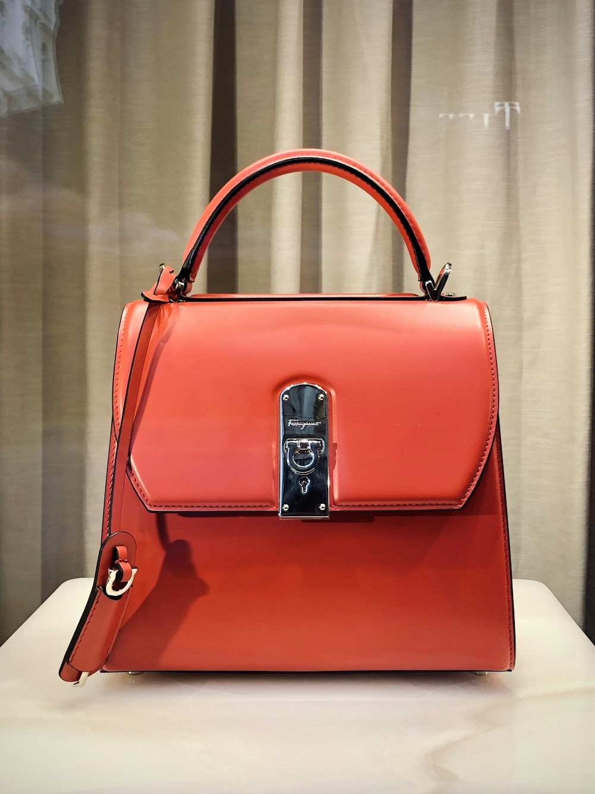

1. The Architectural Philosophy of the Luxury Tote Bag
To the casual observer, a luxury tote bag appears to be a simple open vessel with two handles. In reality, a masterfully crafted structured tote is an exquisite triumph of micro-architecture and mechanical engineering. It must support up to ten kilograms of distributed weight without distorting its rectangular silhouette, stand upright on its own base without collapsing into unsightly folds, and flex comfortably against the human body in motion.
Achieving this elusive equilibrium between rigidity and suppleness requires an intricate internal skeleton invisible to the external eye. Just as a Gothic cathedral relies upon flying buttresses and ribbed vaulting to suspend heavy stone arches, a luxury tote relies upon calibrated composite interlinings, structural base arches, and reinforced gussets to preserve its noble form across decades of rigorous cosmopolitan life.
2. The Internal Skeletal Layers: Salpa, Microfiber, and Vegetable Parchment
Raw leather, no matter how exquisite its tannage, is an anisotropic organic membrane that stretches unevenly along its directional fibers. If a tote bag were constructed purely from leather and velvet without internal reinforcement, the base would bow downward under the weight of a laptop, and the handle chapes would distort the top opening.
The Multi-Tiered Internal Reinforcement Matrix:
• Salpa (Bonded Leather Fiberboard): Derived from recycled vegetable-tanned leather scraps pulverized and bonded with natural latex, Salpa provides authentic leather rigidity while allowing the tote to breathe naturally.
• Micro-Calibrated Velodon: A non-stretch, high-tensile synthetic membrane adhered beneath handle attachments to prevent leather elongation under heavy vertical loads.
• Reinforced Base Arch (Buttress Plate): A 1.8mm molded structural cellulose composite inserted between the outer base leather and the interior lining, distributing point loads across the entire perimeter.
| Structural Component | Material Specification | Mechanical Function | Lifespan Impact |
|---|---|---|---|
| Base Bedrock Plate | Molded Cellulose Composite + Salpa 1.8mm | Prevents base sag under point loads; ensures freestanding posture | Eliminates bottom distortion permanently |
| Handle Chapes | Triple-layer full-grain box calf with Velodon core | Distributes carrying tension across 40 sq cm of side wall | Prevents handle tear-out under heavy loads |
| Gusset Fold Geometry | Scored 0.6mm calfskin with memory flex memory | Enables smooth accordion expansion and closure | Prevents lateral creasing and fiber fatigue |
| Top Rim Binding | Hand-molded French box calf folded rim | Maintains crisp rectangular perimeter under load | Prevents opening sag and lip warping |
3. Kinematics of the Dual-Gusset Accordion Side Wall
The side gussets of a tote bag represent its primary kinematic mechanism. When empty, the gussets must fold inward with crisp, razor-sharp geometric symmetry, allowing the tote to maintain a sleek, slim profile under the arm. When loaded with travel portfolios or overnight garments, the gussets must expand fluidly without placing stress on the corner seams.
In our atelier, gusset leather is scored along precise parabolic axes using heated bone folding tools. This imparts a permanent "mechanical memory" into the leather collagen fibers, ensuring that the gussets naturally snap back into their crisp inward folds the moment cargo is removed.
4. Solid Brass Metallurgy: The Jewelry-Grade Hardware Standard
Hardware on a luxury tote is not mere decorative trim; it constitutes the mechanical bearing system that absorbs kinetic shocks during movement. Commercial luxury manufacturers routinely cast hardware from Zamak (a cheap alloy of zinc, aluminum, magnesium, and copper) because it melts at low temperatures and casts rapidly in automated molds. However, Zamak is brittle, lightweight, and prone to catastrophic snapping under sudden impact.
At Velvet Tote Beam, all hardware components are CNC-machined from solid architectural brass ingots (CuZn39Pb3):
- Tensile Strength: Solid brass boasts a yield strength exceeding 350 MPa, ensuring that D-rings and swivel snap-hooks never deform or fracture.
- Acoustic and Tactile Signature: When solid brass clasps close, they produce a distinct, authoritative mechanical "click" that communicates substantial luxury.
- 24k Champagne Gold Electro-Plating: Hardware is immersed in multi-stage galvanic baths, receiving a nickel-free copper undercoat followed by a heavy 3-micron deposit of 24-karat pale gold with a protective hard-lacquer bake.
5. The Base Stud System: Elevating the Bag Above Harm
A true luxury tote must never rest directly upon dusty floors or wet marble counters. Our bags are equipped with five solid brass domed feet (clous de fond) screwed directly into threaded brass backplates embedded inside the reinforced base plate.
These feet elevate the velvet and leather base by 8mm, creating an air cushion that shields the noble materials from abrasive grit, liquid spills, and surface scuffs in restaurants, private jets, and boardroom floors.
6. Detailed Case Study: Stress-Testing the Sovereign 38
During quality assurance testing at our New York atelier, our flagship Sovereign Emerald 38 tote was subjected to rigorous mechanical load cycling: loaded with 12 kilograms of steel ball bearings and suspended from a pneumatic jolt-tester cycling 10,000 vertical drops at 1.2 Hz. Post-test inspection revealed zero stitch displacement, zero handle chape elongation, and 100% retention of base flat alignment.
6. Mathematical Modeling of Gusset Deflection Under Dynamic Load
In structural engineering, the deflection curve of a beam under uniform distributed load follows classical Euler-Bernoulli beam theory. In a luxury tote, the top rim binding functions as a continuous rectangular beam supported at four corner points. When an eight-kilogram load (such as a laptop, travel folio, and water flask) is placed inside the central chamber, downward gravitational force creates bending moments along the side walls.
By incorporating calibrated 0.8mm high-density cellulose composite stiffeners laminated between the outer velvet and the inner French lambskin lining, our engineers reduce lateral sidewall deflection to less than 1.5 millimeters. This microscopic tolerance ensures that the tote retains its immaculate rectangular poise whether empty or fully packed for an international voyage.
7. Stress-Testing Protocols: The Transatlantic Drop Test
Before any new silhouette design is approved for bespoke commission, prototypes undergo rigorous mechanical stress testing in our New York testing lab. Bags are loaded with ten kilograms of balanced weights and subjected to 5,000 cycles on an oscillating drop arm that simulates the violent kinetic jolting experienced during turbulent flights and urban commuting. Only silhouettes that exhibit zero seam displacement, zero hardware deformation, and perfect closure alignment are admitted to the permanent collection.
7. Frequently Asked Questions on Bag Engineering
8. Conclusion: Architecture You Can Carry
An iconic luxury tote is not an accident of styling; it is the deliberate culmination of structural science, metallurgical precision, and geometric discipline. By investing in rigorous architectural engineering, Velvet Tote Beam ensures that your tote remains as majestically poised on its tenth anniversary as it was on its first day out of the atelier box.